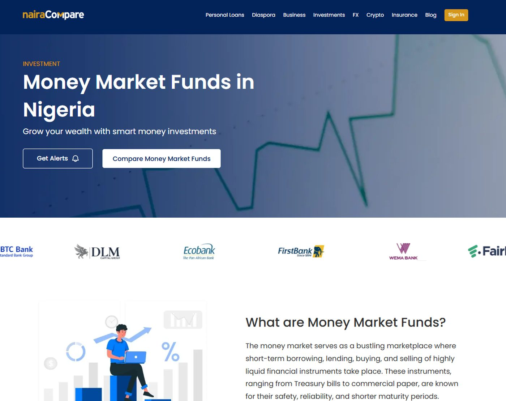
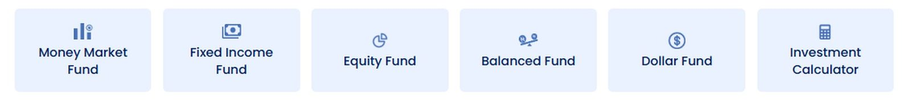

One journey, not three projects.
I designed Investments as a single lifecycle: find a fund, apply, manage it, take money out. Website, customer portal and admin console were designed together instead of handed off one after another.
Every fund type runs on the same pattern, from money market through to dollar funds. That is why new categories could be added later without redrawing anything.

Same skeleton, different fund. Six fund types run on this one structure.

Detail, the category rail
One component, six entries, and a calculator sharing the same shape. Adding a fund type is a content change, not a redesign.